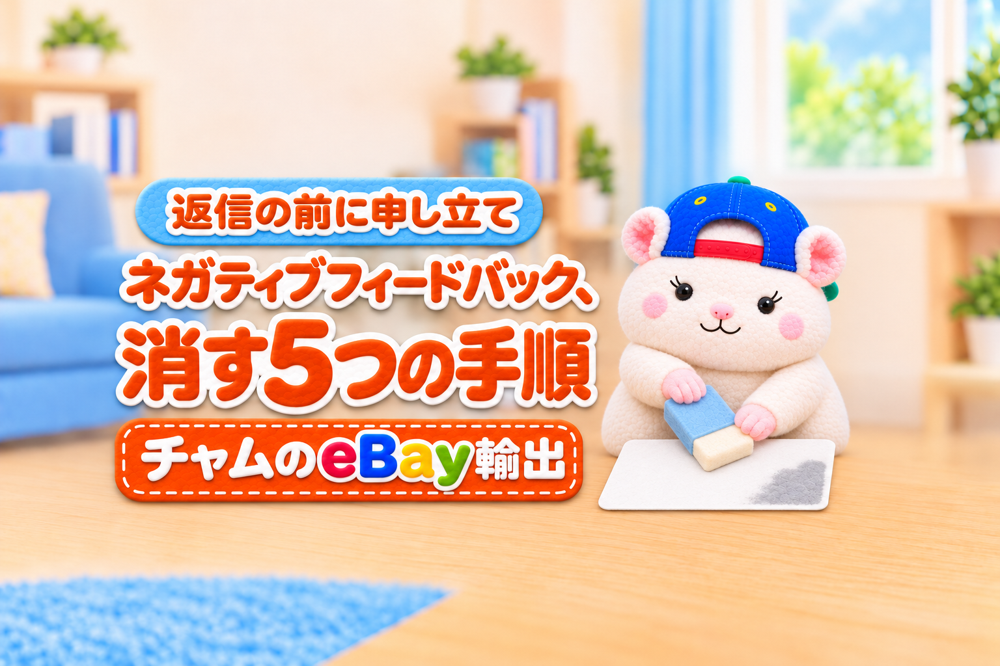

そのネガティブフィードバック、消せるかもしれません。
理由がeBayのルールに該当すれば、eBayがすぐに消してくれます。
やることは、この5つです。
- フィードバックへの返信を、急いで書かない
- 削除の条件に当たるかを照らす
- 証拠を5つそろえる
- eBay Japan(またはeBay.com)に申し立てる
- 消えなかったら、バイヤーと話して解決する
ネガティブが付いたら、この記事をAIに読ませて、「この順に対応してください」と伝えるのがおすすめです。
AIが、まずこのネガティブを消せる可能性があるかを確かめます。
そのうえで証拠を集めて、eBay Japan(またはeBay.com)に送るメッセージの文面まで作ってくれます。
そのまま使えるプロンプトを、記事の後半に載せています。
この記事を書いた人

この記事は、返品不可の商品に付いたネガティブを、申し立てでその日のうちに消してもらったチャムが書いています。
そもそも「フィードバック」「評価」「レビュー」のちがい
先に、言葉をそろえておきます。
| 言い方 | 中身 | eBayの正式な名前か |
|---|---|---|
| フィードバック(Feedback) | 取引のあとにバイヤーが付ける、ポジティブ・ニュートラル・ネガティブの3段階 | ◯ 正式 |
| 評価 | フィードバックの日本語の通称 | △ 通じるが正式ではない |
| レビュー | 商品そのものへの感想(商品レビュー) | ✕ 別のしくみ |
eBayのヘルプでも、eBay Japanの窓口でも、使われているのは「フィードバック」です。
申し立てのときも「ネガティブフィードバック」と書くと、話が早く通ります。
1. フィードバックへの返信を、急いで書かない
ここでいう返信とは、バイヤーのフィードバックのすぐ下に出る、セラーからの返事のことです。
あなたのストアのフィードバックを見た人は、だれでも読めます。
ネガティブが付くと、すぐに言い返したくなります。
でも、ここで手を止めます。
- 公開されるフィードバックへの返信は、1つのフィードバックに1回だけ
- 書いたあとから、編集も取り消しもできない
- 返信は、これから買う人みんなが読む
先に返信を書いてしまうと、あとで削除されなかったときに、書き直せません。
まずは「消してもらえるか」を確かめるのが先です。
2. 削除の条件に当たるかを照らす
eBayには、フィードバックを消すルール(フィードバック削除ポリシー)があります。
セラーがよく出会うのは、このあたりです。
| 消してもらえるケース(例) | 消えないケース(例) |
|---|---|
| 返品不可の商品で、バイヤーの都合の返品を断った | 商品や対応についての、バイヤーの意見・感想 |
| 出品に正しく書いてあったことへの不満 | 出品の説明に書いていなかった傷への不満 |
| 見返りを求めて、フィードバックをたてにされた | 発送が遅れたことへの不満 |
| 追跡で、発送も配達も予定どおりだったと分かる | |
| セラーのせいではない関税・税金への不満 |
ポイントは、バイヤーの「意見」は消えないことです。
「事実として、セラーの落ち度ではない」と示せるときに、消してもらえます。
例えば、ぼくのストアでもらったネガティブは、こんな流れでした。
- 返品不可と書いた商品を、バイヤーがまちがえて買った
- 手持ちのものに合わないので返品したい、と連絡が来た
- 返品不可の理由を説明して、お断りした
- 「返金の相談に応じない」とネガティブが付いた
これは、表のいちばん上の「返品不可の商品で、バイヤーの都合の返品を断った」にそのまま当たります。
3. 証拠を5つそろえる
申し立てでは、「事実」を見せます。
そろえるのは、この5つです。
| そろえるもの | どこで見るか |
|---|---|
| 商品番号・注文番号 | 注文の画面 |
| フィードバックの日付とコメント | フィードバックの一覧 |
| 出品の返品ポリシー | 出品ページ |
| バイヤーが選んだ返品の理由 | 返品リクエストの画面 |
| あなたが返事をした日と中身 | 返品リクエスト・メッセージ |
いちばん大事なのは、バイヤーが選んだ返品の理由です。
バイヤーが自分で「注文をまちがえた」「気が変わった」を選んでいれば、それがバイヤーの都合だという証拠になります。
もう1つは、あなたが返事をした記録です。
「返事をしてくれない」というコメントでも、返事の日付があれば、事実とちがうと示せます。
ぼくのストアでは、この5つの洗い出しをAIに任せています。
AIは、eBayの公式のAPIで注文・返品・メッセージの記録を集め、日付つきの経緯にまとめます。
ぼくは、eBay Japanに書面で確認した範囲(公式のAPIを使う・バイヤーの個人情報をAIに渡さない・AIでeBayの画面を開かない)でAIを使っています。
AIをどこまで使うかは、eBayの規約を確かめたうえで、ご自身の責任でお願いします。
4. eBay Japan(またはeBay.com)に申し立てる
eBay Japan セラーポータルの「お問い合わせ」画面(実際の画面・アカウント名はぼかしています)
日本のセラーなら、eBay Japanの「セラーポータル」の「お問い合わせ」から、日本語で送れます。
eBay.comの窓口(Seller Help)に英語で送ることもできます。
申し立ては、取引から90日以内です。
文面は、3つのかたまりにすると伝わります。
- 対象: 商品番号・注文番号・フィードバックの日付とコメント
- 経緯: 返品ポリシー → バイヤーが選んだ理由 → あなたの返事、を日付の順に
- 理由: 削除ポリシーのどのケースに当たるか、を1〜2行で
気をつけたいのは、当てはまる理由を1つにしぼることです。
「あれも、これも」と書くと、いちばん強い理由がぼやけます。
例えば、ぼくのときは、理由を「返品不可の出品で、バイヤーの都合の返品を断った」の1本にしました。
朝に送って、その日の夕方にeBay Japanから「削除対象となりますため、削除させていただきました」と返事が来ました。
5. 消えなかったら、バイヤーと話して解決する
削除の条件に当たらず、消えないこともあります。
そのときは、バイヤーと話して、問題そのものを解決しにいきます。
解決できれば、バイヤーにフィードバックを見直してもらえることがあります。
| 順番 | やること | 気をつけること |
|---|---|---|
| ① | メッセージで、バイヤーの困りごとを聞く | 言い返さない・まず聞く |
| ② | 妥協点を出す(一部返金・使い方の説明など) | 返金は、条件を付けずに先にする |
| ③ | 解決したら、修正リクエストを送る | 30日以内・1年に5件まで・10日で無効 |
| ④ | それでもだめなら、公開の返信 | 1回だけ・あとから直せない |
修正リクエストは、バイヤーにフィードバックを見直してもらうしくみです。
バイヤーが応じてくれると、ネガティブのコメントは表示されなくなります。
ここで、気をつけたいことがあります。
「フィードバックを直してくれたら、返金します」は、ルール違反です。
フィードバックと引きかえの見返り(返金・割引・プレゼント)は、eBayのルールで禁止されています。
順番は、いつも「先に解決 → あとからお願い」です。
一部返金は、フィードバックとは関係なく、困りごとへの対応として先に送ります。
そのうえで、「解決できていたら、フィードバックを見直していただけるとうれしいです」と修正リクエストを送ります。
それでも見直してもらえなかったら、最後に公開されているフィードバックへの返信です。
この返信は、言い返す場所ではありません。
読むのは、これから買う人です。
- 何があったかを、日付と事実だけで書く
- バイヤーを責める言葉を入れない
- 短く、2〜3文で終える
AIに渡すプロンプト(コピーして使えます)
ネガティブが付いたら、この記事のURLと一緒に、下のプロンプトをAIに渡してください。
【 】の中は、わかる所だけ書けば大丈夫です。
この記事を読んで、私のストアに付いたネガティブフィードバックに、記事の5つの手順の順に対応してください。
【ネガティブの情報】
・商品番号:
・注文番号:
・フィードバックの日付とコメント:
・出品の返品ポリシー:
・返品リクエストがあれば、バイヤーが選んだ理由:
・私がバイヤーに返事をした日と中身:
【やってほしいこと】
1. 記事の「消してもらえるケース」に当たるかを確かめて、当たるならどれか1つを、理由つきで教えてください
2. 証拠が足りなければ、何をどの画面で見ればいいかを教えてください
3. 消せる可能性があれば、eBay Japanのセラーポータルに送る日本語の文面を作ってください(対象・経緯・理由の3つのかたまり。理由は1つにしぼる)。eBay.comに送るときのために、英語版も作ってください
4. 消せる可能性が低ければ、バイヤーと解決するためのメッセージ(困りごとを聞く・妥協点を出す)と、解決したあとの修正リクエストの文面、最後の手段の公開の返信の案(日付と事実だけ・2〜3文・バイヤーを責めない)を作ってください
【守ること】
・バイヤーの名前・ID・住所は書かない
・返金や割引を、フィードバックの見直しと引きかえにする文面は作らない(先に解決して、あとから見直しをお願いする)
AIが返してくるのは、「消せるか」の判断と、申し立ての文面か返信の案です。
送るかどうか・どの文面にするかは、あなたが決めます。
ぼくのストアでは、AIが公式のAPIで注文・返品・メッセージの記録を集めるので、【 】も自分では埋めていません。
AIをどこまで使うかは、eBayの規約を確かめたうえで、ご自身の責任でお願いします。
まとめ
ネガティブフィードバックをもらったら、この5つです。
- フィードバックへの返信を、急いで書かない
- 削除の条件に当たるかを照らす
- 証拠を5つそろえる
- eBay Japan(またはeBay.com)に申し立てる
- 消えなかったら、バイヤーと話して解決する
ネガティブは、もらったら終わりではありません。
返品不可の書き方・返事の記録・バイヤーが選んだ理由。
ふだんの対応がきちんとしていれば、それがそのまま申し立ての証拠になります。
返品の連絡が来たときの対応は、前の記事にまとめています。

あなたのストアに、消せるかもしれないネガティブは残っていませんか？
▼中の人🏠(レンタルスペース23部屋・売上1.5億)のレンスペ実録

▼ブログ(eBay×レンスペ、全記事まとめ)

▼この店のやり方は、ぜんぶ1冊にまとめてあります
リサーチ・出品・値付け・顧客対応まで、初月利益10万4,286円を出した実店舗の記録と手順を全部書いた教科書です。
読んだその日から、AI社員の作り方をそのまま真似できます。
『AI × eBay輸出の教科書 — 梱包以外、ぜんぶAI』


🎁 2026年10月22日に第3版になりました。顧客対応 完全自動化ツール・ストアドクター・AI自動化コーチなど付録6つは、これまでに買った人も含めて購入者全員に無料で受け取れます。
内容・最新価格は販売ページをご確認ください。